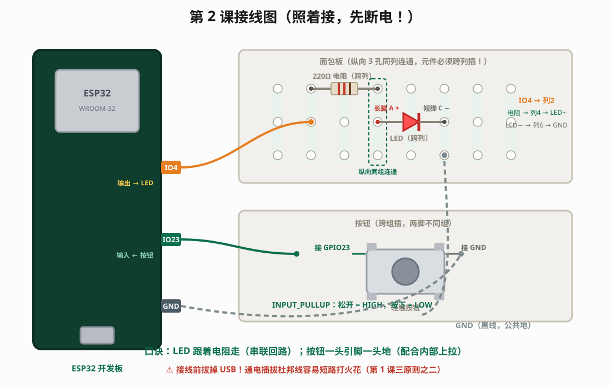

阶段一 · 破冰与建立信心 ｜ 难度：★★☆☆☆ ｜ 预计用时：45–60 分钟（接线 20 分钟 + 写代码 20 分钟）
本课材料：ESP32 开发板 ×1、USB 线 ×1、面包板 ×1、LED ×1（或用板载 LED）、220Ω 电阻 ×1、轻触按钮 ×1、杜邦线若干 无硬件替代：文末附 Wokwi 在线模拟器方案，只有浏览器也能学完本课

你将做出：按一下按钮，面包板上的红色 LED 亮起；再按一下，它熄灭。 一颗按钮，完整走通"输入 → 决策 → 输出"的控制闭环——这是所有智能设备的最小骨架。
上一课你让灯"自己闪"，这一课你让灯"听你的话"。从这里开始，芯片不再是单向播放的录音机，而是会回应外界的控制器。
本课学习目标（完成后你将拥有）：
INPUT_PULLUP，用按钮控制 LED第 1 课的课后挑战你算出来了吗？先对答案：
题目回顾：红色 LED 导通时两端约 2V，想把电流控制在 10mA，电阻分掉 3.3V − 2V = 1.3V，由
R = V ÷ I = 1.3V ÷ 0.01A = 130Ω。
理论值 130Ω 没错。但你去商店买电阻，会发现根本没有 130Ω 这个规格——这就是理论与工程的第一道裂缝。
电阻是标准化批量生产的，行业通用 E12 系列（误差 ±10%），阻值只有一串固定档位：
10 12 15 18 22 27 33 39 47 56 68 82 （×10ⁿ，循环往复）
… 120 150 220 330 470 680 1k 1k2 1k5 2k2 …
标准答案：130Ω 不在档位里，取最接近的 120Ω 或 150Ω 都行（电流分别是 10.8mA 和 8.7mA，都在安全区）。而实际工程里，新手最常备、几乎万能的选择是 220Ω——电流约 5.9mA，LED 依然足够亮，却给芯片引脚留了充足余量。
💡 工程思维第一课：设计值算出来是"理想"，落地时永远要在标准件里就近取档。误差 ±10% 完全无妨——电路不怕差这十几欧姆，怕的是压根没有这档货。
📌 欧姆定律再确认（第 1 课交互实验台里玩过）：
V 3.3V − 2V 1.3V
I = ───────── → I = ────────── = ──────── ≈ 10mA
R R 220Ω ≈ 5.9mA
第 1 课的 digitalWrite 是输出：芯片主动把引脚置为 3.3V（HIGH）或 0V（LOW），去驱动灯。这一课的另一半世界是输入：芯片读取引脚上的电压，判断外面接的是高还是低。
| 方向 | Arduino 写法 | 白话 | 本课实例 |
|---|---|---|---|
| 数字输出 | pinMode(4, OUTPUT) + digitalWrite() |
"我往外供电/断电" | LED 亮灭 |
| 数字输入 | pinMode(23, INPUT_PULLUP) + digitalRead() |
"我读外面是 1 还是 0" | 按钮状态 |
关键认知：数字输入只有两种读数——HIGH 和 LOW。它读的不是"外面有多少伏"，而是"电压站在 3.3V 这边，还是 0V 这边"（阈值大约 1.65V，低于判低、高于判高，详见第 6 课）。
那问题来了：按钮松开时，引脚悬在半空，读出来是什么？
按钮只是一根能按下去的金属片，它只有两种状态：接通或断开。松开时引脚与任何地方都不相连——这叫浮空（floating），电平飘忽不定，digitalRead 会读出随机的 0 和 1，程序直接发疯。
解决办法：用一颗电阻把引脚默认"拉"到确定电平。拉到 3.3V 的叫上拉（pull-up），拉到 0V 的叫下拉（pull-down）：
3.3V 3.3V
│ │
[R] 上拉电阻 10kΩ [R] 10kΩ
│ │
├──── 引脚 ├──── 引脚
│ │
[按钮] [按钮]
│ │
GND GND
按钮松开 → 引脚被电阻拽到 3.3V → 读到 HIGH
按钮按下 → 引脚直通 GND → 读到 LOW （按下 = LOW，反直觉但记住它）
好消息：ESP32 每个普通 GPIO 内部都内置了这颗上拉电阻，一行代码 INPUT_PULLUP 就能启用，外部一颗电阻都不用接。这就是本课按钮只需要两根线（一根接引脚、一根接 GND）的秘诀。
⚠️ 为什么按钮另一端接 GND 而不是 3.3V？ 配合上拉，"按下"会把电平拽低，读到 LOW。约定俗成：LOW = 被按下。第 6 课讲引脚陷阱时你会发现，有些"仅输入"引脚（GPIO34/35/36/39）连内置上拉都没有——第 1 课挑战里你把 LED 改到 34 亮不了，那颗雷的完整拆解也在第 6 课。
面包板不是"插着好玩的板子"，它的塑料壳下面藏着一排排铜条。规则只有一条：
同一组 5 个孔，内部用铜条连通；中间沟槽隔开左右两侧；板边的电源轨每 5 孔一组纵向连通（常有断点，用万用表确认）。
A B C D E │ F G H I J
○ ○ ○ ○ ○ │ ○ ○ ○ ○ ○ ← 同一横排的 5 个孔连通
○ ○ ○ ○ ○ │ ○ ○ ○ ○ ○
○ ○ ○ ○ ○ │ ○ ○ ○ ○ ○ ← 沟槽两侧互不相通
────────────── 沟槽（DIP 芯片跨坐在这里）──────────────
两个新手必犯错误：
虚线框内的孔 = 一根看不见的铜条，插进去的元件脚彼此导通；跨过沟槽就不通了（真实板每组 5 孔，图中简化为 3 孔）。所以 LED 两脚必须分属不同组、按钮两脚必须跨组——插同一组 = 内部短路，按了也白按。
按下面的接线表连接（第 1 课三原则第 2 条：先断电接线，再通电）：
| 从 | 到 | 说明 |
|---|---|---|
| ESP32 GND | 面包板负极轨（任意） | 建立公共地 |
| ESP32 GPIO4 | 电阻一端 | 电阻串在回路里（第 1 课学的：忘串电阻 = 烧 LED） |
| 电阻另一端 | LED 长脚（阳极 A） | LED 极性：长脚正、短脚负 |
| LED 短脚（阴极 C） | 面包板负极轨 | 回到 GND，回路闭合 |
| ESP32 GPIO23 | 按钮脚 A（跨沟槽的一侧） | 输入引脚，内部上拉 |
| 按钮脚 B（另一侧） | 面包板负极轨 | 按下时把引脚拽到 GND |

🧭 接线口诀：LED 跟着电阻走（串联回路），按钮一头引脚一头地（配合上拉）。
Wokwi 无硬件方案：新建 ESP32 DevKit 项目 → 添加
LED、Resistor（220Ω）、Pushbutton→ 按上表接线（Wokwi 按钮选GND和GPIO23两脚）→ 代码完全相同，点 Start 即可。
// ============================================
// 第 2 课：按钮点灯 —— 输入 → 决策 → 输出
// ============================================
const int LED_PIN = 4; // 外接 LED（经 220Ω 电阻）
const int BTN_PIN = 23; // 按钮，配合内部上拉
bool ledOn = false; // 记住灯的当前状态（灭 = false）
void setup() {
pinMode(LED_PIN, OUTPUT); // LED：输出方向
pinMode(BTN_PIN, INPUT_PULLUP); // 按钮：输入方向 + 启用内部上拉
Serial.begin(115200);
}
void loop() {
if (digitalRead(BTN_PIN) == LOW) { // LOW = 按钮被按下（上拉的约定）
ledOn = !ledOn; // 翻转状态：亮变灭、灭变亮
digitalWrite(LED_PIN, ledOn ? HIGH : LOW);
Serial.println(ledOn ? "LED ON" : "LED OFF");
delay(300); // 防抖 + 等你松手（这行是雷！）
while (digitalRead(BTN_PIN) == LOW); // 等待松开，防止按住不放狂跳
}
}
const int LED_PIN = 4; / const int BTN_PIN = 23;
两个引脚各起名字。接线变了只改这两行——第 1 课养成的习惯，本课立刻兑现。
bool ledOn = false;
bool 只有两个值：true / false。灯的状态本质就是 1 bit 信息，用它记住"现在是亮是灭"。状态存在变量里，而不是去猜硬件现在的样子——这是控制类程序的核心思维。
pinMode(BTN_PIN, INPUT_PULLUP)
三个词拆开：INPUT 声明方向是读入；PULLUP 启用内部上拉电阻，给引脚一个"松开时默认读 HIGH"的锚点。没有它，浮空引脚会读出随机数。
digitalRead(BTN_PIN) == LOW
读引脚电平。因为上拉 + 按钮接 GND 的组合，按下 = LOW。第一次写"反直觉"的判断条件，先背下来，第 6 课你会看到完整的电平真相。
ledOn = !ledOn;
! 是取反：true 变 false，false 变 true。一个字符实现"切换"——每按一次翻一档，这就是 toggle 开关的全部秘密。
digitalWrite(LED_PIN, ledOn ? HIGH : LOW);
? : 是三元运算符：ledOn 为 true 就给 HIGH，否则给 LOW。等价于写两行 if-else，但更紧凑。
delay(300); + while (digitalRead(BTN_PIN) == LOW);
按下后先等 300 毫秒（跳过按键触点抖动的混乱期），再原地等待直到你松手。这两行让程序"停下来等"——第 1 课你已经知道 delay 是原地罚站，本课它罚得更久。先能用，第 3 课我们把 delay 扔掉，第 10 课你会明白为什么必须扔。
轻触按钮的金属弹片在按下的瞬间不会"啪"地干脆接触，而是高频弹跳几毫秒才稳定——像皮球落地前的连续小弹跳。这会导致一次按下被读成多次：
按一次，实测波形在稳定前来回横跳好几次——每次横跳都被 digitalRead 当成一次新按下。本课代码用 delay(300) 硬压住它；第 10 课我们用 millis() 优雅根治。现在，把"按一次跳多次"的现象记进笔记本！
上面的代码靠 delay(300) 粗暴压住了抖动。记住这个"靠停顿换稳定"的笨办法——它是第 3 课（扔掉 delay）和第 10 课（millis 彻底告别阻塞）两颗伏笔的引线。你现在体会到的"程序为了等按钮不得不罚站"，就是嵌入式工程师几百年来（夸张）最头疼的问题。
LED ONLED OFF全部打勾 → 你已经掌握了嵌入式最重要的控制范式：读输入 → 改状态 → 驱动输出。进入第 3 课。
delay(300) 改成 delay(5)，快速连按 20 次，数一数灯"多跳了几次"。把现象记在笔记本上——这就是按键抖动的真面目，第 10 课我们用 millis() 优雅解决它。INPUT_PULLUP 改成普通 INPUT（去掉上拉），不改接线上传代码。按按钮时读数是什么？灯还听话吗？现象记下来——第 6 课讲浮空引脚时揭晓。| 现象 / 报错关键词 | 原因 | 解决办法 |
|---|---|---|
| 灯常亮，按钮完全没反应 | LED 或按钮两脚插进了同一组 5 孔（内部短接） | 断电，按接线图重新插：LED 两脚分属电阻组和 GND 组，按钮两脚跨组 |
| 按了灯不亮，但串口有打印 | ① LED 极性反了 ② 电阻虚插 ③ LED 引脚号与代码不符 | 长脚应朝电阻方向；重新压实电阻；核对 LED_PIN |
不按按钮，串口随机刷 LED ON/OFF |
引脚浮空——INPUT_PULLUP 没生效或按钮没接 GND |
确认代码是 INPUT_PULLUP；按钮另一端必须接 GND 而不是悬空 |
| 按一次灯跳好几下（连按却"自作主张"） | 按键抖动（本课埋的雷，属正常物理现象） | delay(300) 应已压住；若仍出现检查是否把 delay 改小了——记下现象，第 10 课根治 |
| 按住灯亮，松手立刻灭 | 接成了"点动"：按钮串在 LED 回路里了 | 按钮必须独立接 GPIO23，别串进 LED 回路；LED 只受 GPIO4 控制 |
error: 'INPUT_PULLUP' was not declared |
板子型号选错，用了非 ESP32 核心 | 工具 → 开发板确认为 ESP32 Dev Module |
| 编译报引脚冲突 / 行为诡异 | 用了 GPIO34/35/36/39 接 LED | 这些是仅输入脚，digitalWrite 无效——第 1 课埋的雷，第 6 课拆解；LED 换到 4/16/17/25 等普通脚 |
| 上传成功但完全没反应 | 程序在跑但你看的是没接线的板载灯 | 本课主角是面包板上的外接 LED，板载灯（GPIO2）不归本课代码管 |
按钮能点了，但灯只有"全亮"和"全灭"两档——能不能让它半亮、让亮度连续变化？ 第 3 课：PWM 与呼吸灯——你会学到芯片"用开关骗过眼睛"的绝技（快速亮灭 = 看起来半亮），让 LED 呼吸般渐明渐暗。更重要的是，本课用来防抖的 delay 将被你亲手扔掉——因为呼吸需要平滑过渡，而 delay 会让呼吸变成抽搐。
本课程系列：从点亮一盏灯，到设计一台会自己思考的机器。